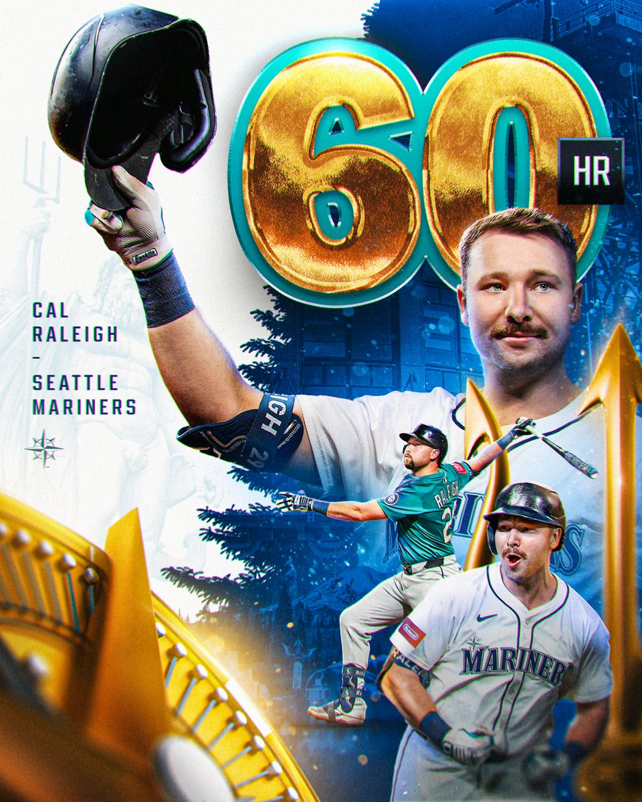

Just How Extraordinary Was Cal Raleigh's 2025 Season?
Since the genesis of the modern Major League Baseball in 1901, there have only been 125 home-run champions crowned. Out of those 125, only two have been switch-hitters, and only one catcher, Cincinnati Reds' Johnny…